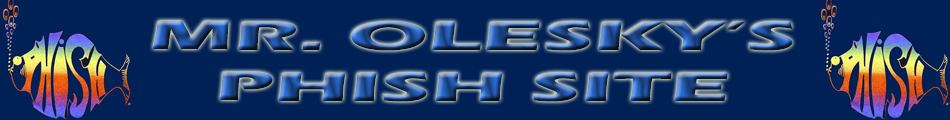

HOME | MEMBERS | SONGS | ALBUMS | TOURS | LYRICS
Phish is an American rock band formed in Burlington, Vermont, in 1983. The band consists of guitarist Trey Anastasio, bassist Mike Gordon,
drummer Jon Fishman, and keyboardist Page McConnell, all of whom perform vocals, with Anastasio being the lead vocalist. The band is
known for their musical improvisation and jams during their concert performances and for their devoted fan following.
The band was formed by Anastasio, Gordon, Fishman and guitarist Jeff Holdsworth, who were joined by McConnell in 1985. Holdsworth
departed the band in 1986, and the lineup has remained stable since. Most of the band's songs are co-written by Anastasio and lyricist
Tom Marshall. Phish began to perform outside of New England in the late 1980s and experienced a rise in popularity in the mid 1990s. In
October 2000, the band began a two-year hiatus that ended in December 2002, but they disbanded again in August 2004. Phish reunited
officially in October 2008 for subsequent reunion shows in March 2009 and since then have resumed performing regularly. All four members
pursued solo careers or performed with side-projects and these projects have continued even after the band has reunited.
This page was last modified on October 31, 2025